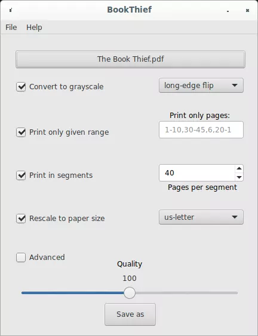
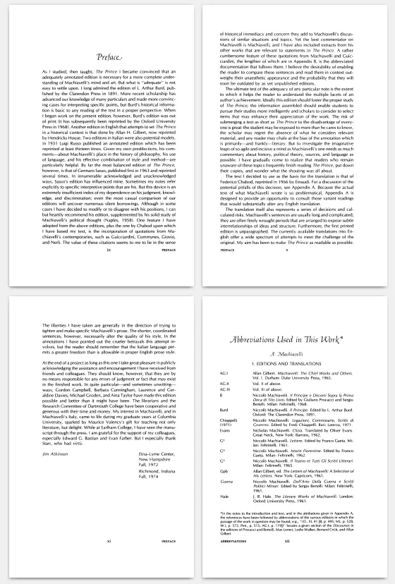
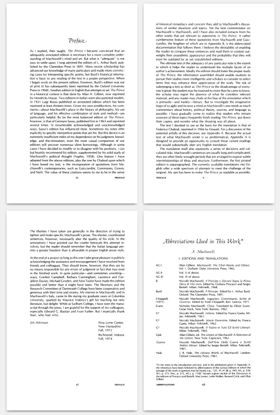
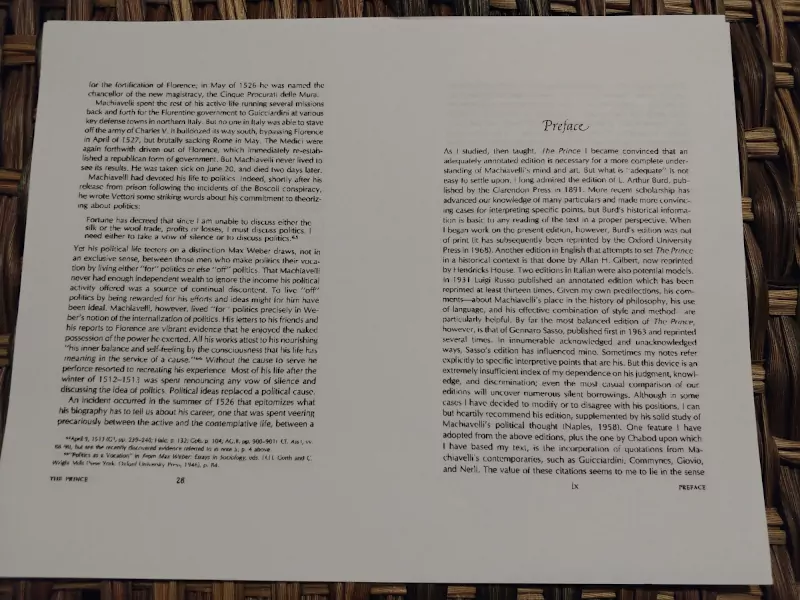
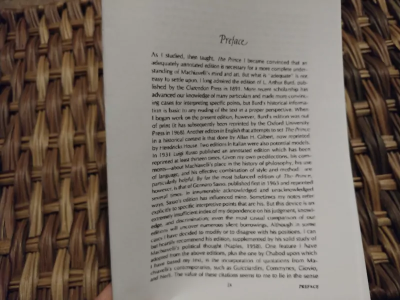

V.O. Artist / Narrator / Audio Specialist
V.O. Artist / Narrator / Audio Specialist
andrew@rail5.org
 BookThief
BookThief
Downloads are at the bottom of this page
I struggle with e-books -- I can't focus on them; if I'm going to read something, then, generally speaking, I need it in print.
So, I made a free program (libre y gratis) called BookThief. It's nothing too special:


It takes an inputted, ordinary PDF


and arranges / transforms it for "pamphlet"-style home-printing

When it prints, you just fold the whole stack of papers in half, and there's your booklet/pamphlet.


Downloads
BookThief is free & open-source software
Windows
Windows users can click here to download the Windows installer
GNU/Linux
Users of Debian GNU/Linux can easily install BookThief via the deb.rail5.org repository:
sudo curl -s -o /etc/apt/trusted.gpg.d/rail5-signing-key.gpg "https://deb.rail5.org/rail5-signing-key.gpg"
sudo curl -s -o /etc/apt/sources.list.d/rail5.list "https://deb.rail5.org/rail5.list"
sudo apt update
sudo apt install bookthief
Source Code
The source code (and more information) is available on Github.
Some example PDFs prepared with BookThief:
The Tricontinental Institute for Social Research
Serve the People: The Eradication of Extreme Poverty in China
Original PDF
BookThief version to be home-printed as a booklet
Serve the People: The Eradication of Extreme Poverty in China
Original PDF
BookThief version to be home-printed as a booklet
Fyodor Dostoyevsky
Crime and Punishment
Original PDF
BookThief version to be home-printed as multiple booklets
(40-page segments)
Crime and Punishment
Original PDF
BookThief version to be home-printed as multiple booklets
(40-page segments)